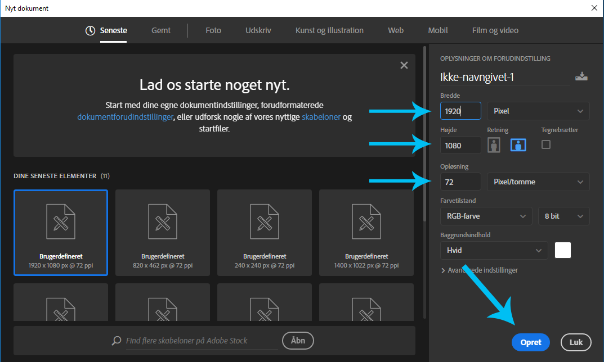
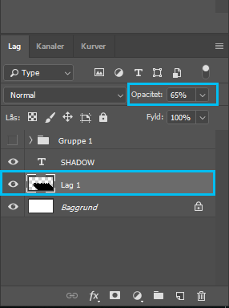

Flatweb skygger
6. Oktober 2018
Først skal vi oprette et dokument, det gør man ved at trykke på ”Filer > Ny”. Hvis Photoshop lige er åbnet, kommer fanen ”Nyt dokument” frem med det samme. Her har jeg valgt dimensionerne (1920px i bredde og 1080px i højde og 72 Pixel/tomme i opløsning). Når dette er gjort, trykker vi på opret.
Herefter vælger vi tekst-værktøjet i højre side, i vores værktøjskasse. Med den skriver vi det, som vi gerne vil tilføje vores skygge på. Jeg har valgt at skrive ”SHADOW” med skrifttypen Gotham Black.

Herefter vælger vi vores stregværktøj. Det gør vi ved at højreklikke på Regtangel værktøjet, og vælge ”Stregværktøj”. Stregværktøjet bruger vi som hjælpelinjer, til at lave vores skygge. Det gør vi ved at lave en lang streg, der er 45 grader. Måden vi kan gøre dette på, er ved enten at lave en lige streg, og rotere den 45 grader. Eller holde SHIFT inde, imens vi trækker stregen skråt nedad. Det gør at vi ”låser” positionen, i lige intervaller. Altså 0 grader (lige) 45 grader, 90 grader osv.
Denne streg skal vi placere på vores ”kanter” af bogstaverne. Som vist nedenfor. Det er vigtigt at det er præcist på kanterne, så det hjælper at zoome ind, så man kan være helt præcis. Det er muligt at duplikere laget, ved at trykke på CTRL/CMD + J.

Når vi har fået placeret vores hjælpelinjer, putter vi dem alle sammen i en gruppe. Det gør vi ved at vælge alle ”Streg” lagene samtidig, og trykke CTRL/CMD + G. Efterfølgende laver vi et nyt lag, ved at trykke CTRL/CMD + SHIFT + N.
Det er vigtigt at dette lag, ikke er inde i gruppen. Man kan flytte med lag ved at klikke og holde inde på dem, under ”lag” i højre side af photoshop. Og så flytte laget helt op i toppen. Man kan dobbelttjekke ved at åbne og lukke gruppen, på pilen til venstre for den. Efterfølgende vælger vi vores ”penværktøj” i værktøjskassen i venstre side, og markere langs kanten af stregerne. Det er vigtigt at vælge den kant der er parralel med vores tekst, for at få det bedste resultat.
Når området er valgt, højreklikker vi et vilkårligt sted inden for vores lærred, og trykker foretag valg. Nu vælger vi vores ”Malerspandværktøj”. Herefter vælger vi en farve, sikre os vi er på det nye lag uden noget på endnu, og fylder det markerede område ud.

Efterfølgende fjerner vi markeringen ved at trykke CTRL/CMD + D. Nu skal vi flytte laget under vores tekst-lag. Det gør vi ved hjælp af samme metode som før. Tryk og hold nede på laget, og flyt det nedenunder tekst laget. Så trykker vi på øjet ved siden af gruppen, med alle stregerne i, for at gøre dem usynlige.
Og så har vi lavet en flatweb skygge på vores tekst. Nu kan man eventuelt sætte opaciteten ned, ved at vælge laget med skyggen, og skrive f.eks 65% i opacitet.
